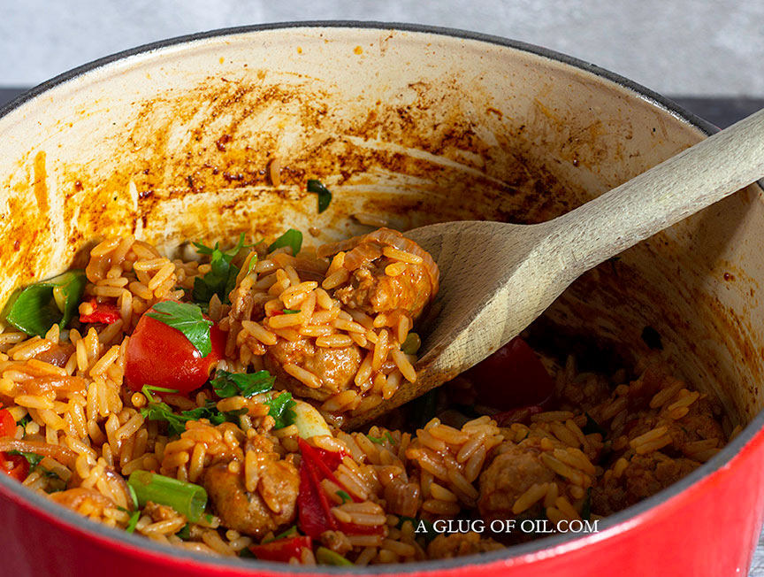

Gordon Ramsay's Spicy Sausage & Rice

Description
Gordon's spicy sausage rice casserole is a real crowd-pleaser and a delicious, quick and easy-to-make dinner.
This dish is ready in under 40 minutes and is so easy to make, even I can make it!
Ingredients
- 1 tbsp Olive Oil
- 1 Red Onion
- 1 Red Bell Pepper
- 2 Garlic Cloves
- 500g Spiced Sausage
- 1 tsp Paprika
- 1 cup Long Grain Rice
- 1/2 cup Dry White Wine
- 2 cups Chicken Stock
- 4 Green Onions
Steps
- Add just 1 tbsp of Olive oil to a heavy-based casserole dish and fry the onion for 5 minutes until soft but not coloured.
- Add the pepper and garlic and cook for 2 minutes while moving it about so the garlic doesn't burn.
- Slit the sausage skins and crumble the sausage meat so it looks like small meatballs.
- Turn the heat to high (otherwise, the sausage will steam rather than brown). Cook while moving it about a bit in the pan for about 4-5 minutes until coloured.
- Add the smoked paprika and mix and season to taste.
- Add the rice and stir well to mix thoroughly and absorb the flavour.
- Now deglaze the pan by pouring in the white wine and scraping any bits stuck to the bottom.
- Add the stock and bring to a boil and then turn to a simmer.
- Cook gently for 15 to 20 minutes until the rice is tender and the liquid almost entirely absorbed. Keep an eye on it and stir from time to time.
- Remove from the heat, gently fold in the spring onions and serve.
Other Recipes